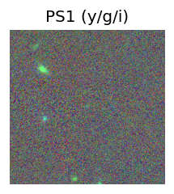
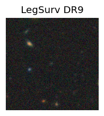
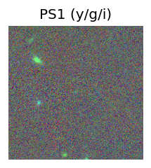
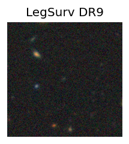
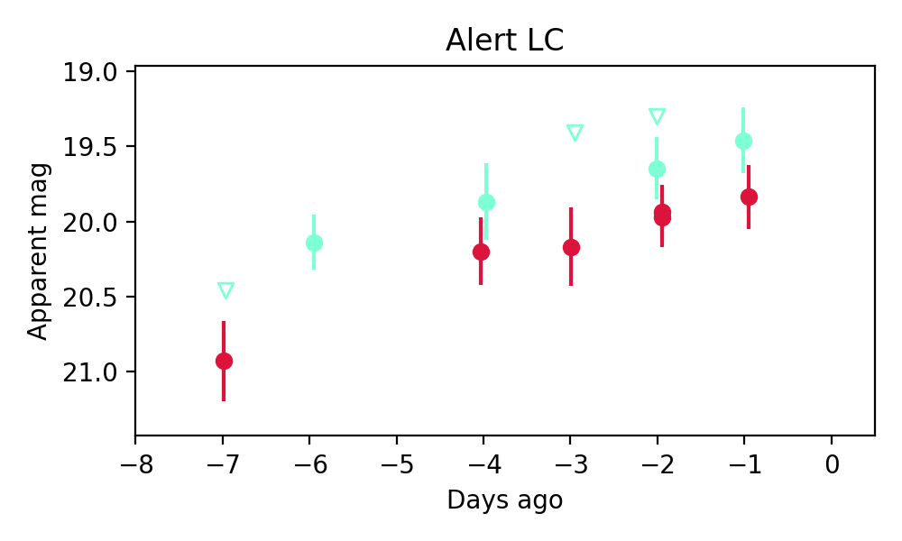
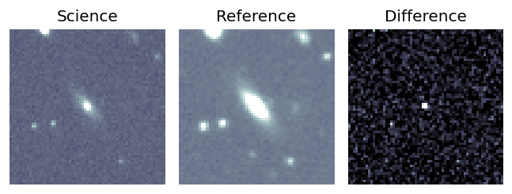
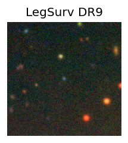
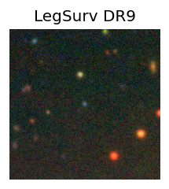
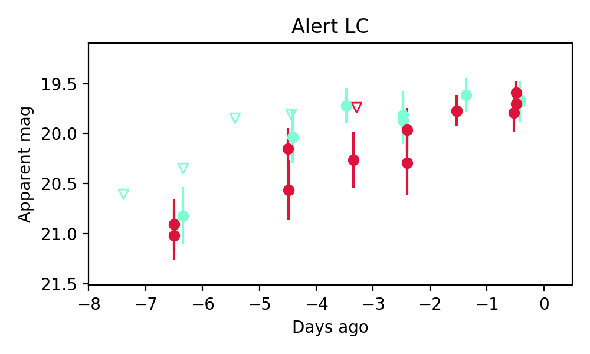

Candidate List 20251009Previous Day Next Day
Section 1: New Sources (age<1d) Section 2: Old (1-5d) sources observed last nightplaceholder
Section 1: New Afterglow/FBOT Cands Last Night (1)
1. ZTF25abwgpjb (Afterglow?) [Back to Top] [Share] [Trigger Swift] [Fritz] [Lasair]RA, Dec: 359.16583, 38.91646 23h56m39.80s, 38d54m59.26sGalactic (l, b): 111.41272, -22.72699 ext(g-r) = 0.157
TESS: Sectors [17 57 84]
PS1: 0 sources in 3 arcsec
LegacySurvey: 0 sources in 3 arcsec

Extinction-corrected gr color:
From alerts: -0.53 +/- 0.23 mag
Rise Rate:
g: 0.25 mag/day
r: 0.18 mag/day
i: -99 mag/day
Fade Rate:
g: 5.09 mag/day
r: -99 mag/day
i: -99 mag/day
Section 2: Older Sources Observed Last Night (3)
0. ZTF25abvqhna (FBOT?) [Back to Top] [Share] [Trigger Swift] [Fritz] [Lasair]RA, Dec: 134.15439, 56.70294 8h56m37.05s, 56d42m10.59sGalactic (l, b): 160.31894, 39.41405 ext(g-r) = 0.03 

TESS: Sectors [20 47 74]
PS1: 0 sources in 3 arcsec
LegacySurvey: 1 sources in 3 arcsec Closest: d = 0.65 arcsec, 75.1 deg (east of north) photoz=0.55 (68% bounds 0.3, 0.91), type=REX peak abs mag = -23.1 (68% bounds -21.55, -24.45)

Extinction-corrected gr color:
From alerts: -0.41 +/- 0.31 mag
Rise Rate:
g: 0.23 mag/day
r: 0.18 mag/day
i: -99 mag/day
Fade Rate:
g: -99 mag/day
r: -99 mag/day
i: -99 mag/day
1. ZTF25abvrbqg (FBOT?) [Back to Top] [Share] [Trigger Swift] [Fritz] [Lasair]RA, Dec: 359.84358, 51.94658 23h59m22.46s, 51d56m47.68sGalactic (l, b): 114.82549, -10.10382 ext(g-r) = 0.279

TESS: Sectors [24 57 84]
PS1: 1 source in 3 arcsec Closest: d = 0.10 arcsec photoz=0.08+/-0.00 peak abs mag = -20.06
LegacySurvey: 0 sources in 3 arcsec

Extinction-corrected gr color:
From alerts: -0.15 +/- 0.14 mag
Rise Rate:
g: 0.33 mag/day
r: 0.48 mag/day
i: -99 mag/day
Fade Rate:
g: -99 mag/day
r: -99 mag/day
i: -99 mag/day
2. ZTF25abwdrev (FBOT?) [Back to Top] [Share] [Trigger Swift] [Fritz] [Lasair]RA, Dec: 346.15185, 27.80472 23h 4m36.44s, 27d48m16.98sGalactic (l, b): 95.78922, -29.37646 ext(g-r) = 0.086
 

TESS: Sectors [56 83]
PS1: 0 sources in 3 arcsec
LegacySurvey: 1 sources in 3 arcsec Closest: d = 0.08 arcsec, 120.3 deg (east of north) photoz=0.68 (68% bounds 0.36, 0.9), type=REX peak abs mag = -23.54 (68% bounds -21.89, -24.29)

Extinction-corrected gr color:
From alerts: -0.09 +/- 0.15 mag
Consistent with synchrotron, g-r>0!
Rise Rate:
g: 0.19 mag/day
r: 0.2 mag/day
i: -99 mag/day
Fade Rate:
g: -99 mag/day
r: -99 mag/day
i: -99 mag/day